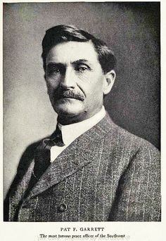
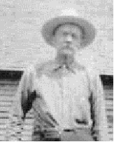

PHOTO ALBUM, GARRETT LINE
Nicholas Ware
The first reliable documentation of the Garrett ancestors in America is 1665 Virginia Land Patent on
Mataponi River of ancestor John GARRETT and his ?brother-in-law Nicholas Ware. Picture is of original Nicholas Ware
descendant Nicholas Ware (b. VA 1776 d. 1824), Planter and US Senator from Georgia and Mayor of Augusta Georgia.

Sheriff Pat Garrett, New Mexico Territory
1850-1908. Maternal cousin, raised on a plantation Claiborne Parish Louisiana.
Edward GARRETT (1733-1794) of Warrior Creek N Laurens Co SC
Married Ann West Owsley (1744-1823). Progenitor of GARRETT clan in N Laurens Co SC, and by DNA test 2020 maternal 6th g grandfather. Also DNA confirmation of descent from
his son Nicholas Ware GARRETT (1765-1846) and his son 4th g grandfather Nicholas GARRETT (1799-1868, m. Ellen RHODES) of Middlefork TN.

Elijah T. Garrett of Middlefork, Tennessee
Younger brother of maternal 3rd great grandfather James Nicholas GARRETT (1822-55). Born 1832 South Carolina upcountry, d. 1882 west TN.

Hosea Garrett
Maternal cousin, 1st cousin of 4th great grandfather Nicholas Garrett (b. SC 1799) of Middlefork TN.
Born 1800 north Laurens Co (epicenter of the Garretts in SC) SC, d. Chapel Hill TX.
A founder of Baylor University and wealthy Planter.

General William Tatum Wofford CSA
Maternal cousin, General CSA of Georgia.
Descendant of 1 of the 5 WOFFORD brothers that moved to Spartanburg Co SC in colonial times.
6th great grandfather James WOFFORD, 1 of the brothers, fought in American Revolution
(in Roebuck's Battalion of Spartan Regiment of Militia (SC), present at Battles of Kings Mt and Cowpens).
Wofford descendants also founded Wofford College of Spartanburg, SC

Joe Ryals of Middlefork, TN ca 1930?
Confederate veteran, his brother W.N. Ryals married Catherine Susannah GARRETT,
sister of 3rd great grandfather James Nicholas GARRETT. W.N. was also a Confederate soldier,
spent a year with Nathan Bedforest Cavalry, then was killed Battle of Resaca Georgia 1864
with TN infantry. "He rode away from the Garrett place
[Middllefork] 1863 never to return". His rifle, etched with "W.N. Ryals" is in the hands of a collector.

Port Royal, Tennessee
Maternal great grandmother Florence Wilcox GARRETT (1877-1962 Montague Co TX) is the source of red hair in the family.
She was the daughter of Wilson Wilcox, Confederate veteran of 11th MO Inf CSA. Thought to be descendants of Samuel Wilcox,
pioneer founder of Port Royal, Tennessee. 2020 test DNA link confirmed to 5th g grandfather Samuel WILCOX.